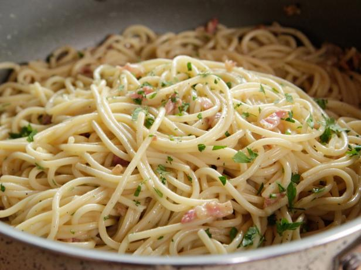

Ingredients
- 1 pound dry spaghetti
- 4 ounces pancetta
- 2 tbsp extra-virgin olive oil
- 4 garlic cloves
- 2 large eggs
- 1 cup freshly grated Parmigiano-Reggiano
Preparation
- Bring a large pot of salted water to a boil, add the pasta and cook for 8 to 10 minutes or until tender yet firm.
- Heat the olive oil in a deep skillet over medium flame. Add the pancetta and saute for about 3 minutes, until the bacon is crisp and the fat is rendered. Toss the garlic into the fat and saute for less than 1 minute to soften.
- Add the hot, drained spaghetti to the pan and toss for 2 minutes to coat the strands in the bacon fat. Beat the eggs and Parmesan together in a mixing bowl, stirring well to prevent lumps.
- Remove the pan from the heat and pour the egg/cheese mixture into the pasta, whisking quickly until the eggs thicken, but do not scramble.
- Thin out the sauce with a bit of the reserved pasta water, until it reaches desired consistency. Mound the spaghetti carbonara into warm serving bowls and garnish with chopped parsley.

Recipe link here